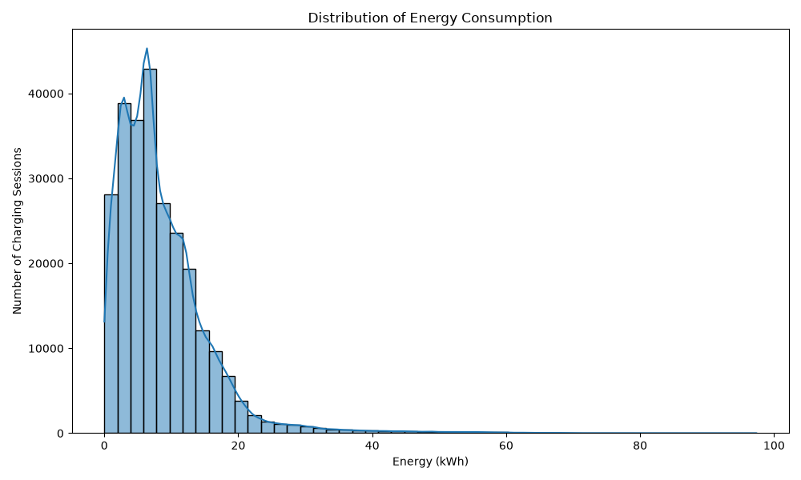
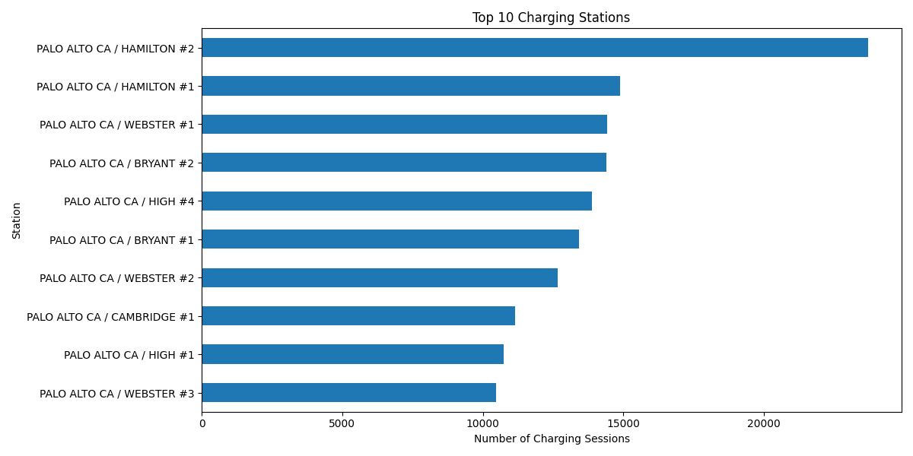
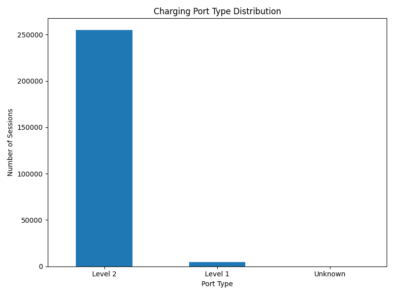
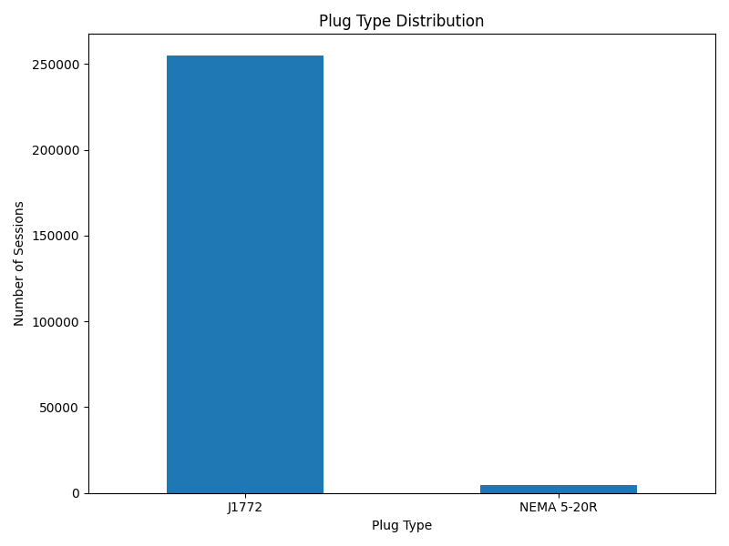
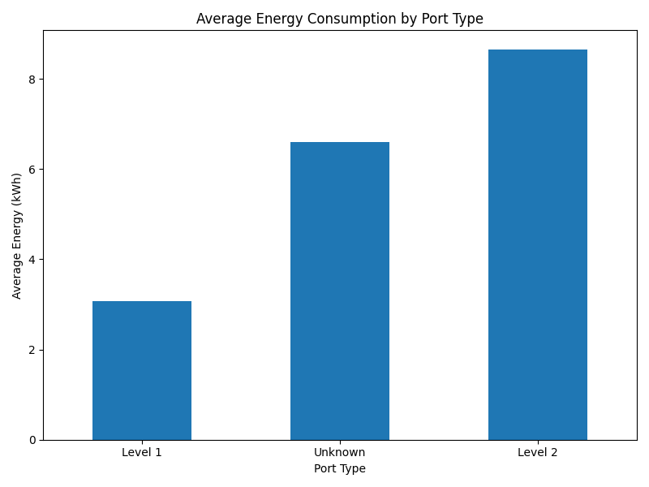
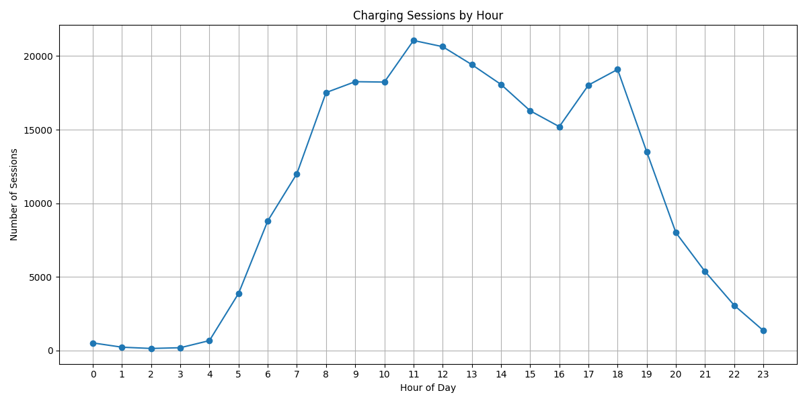
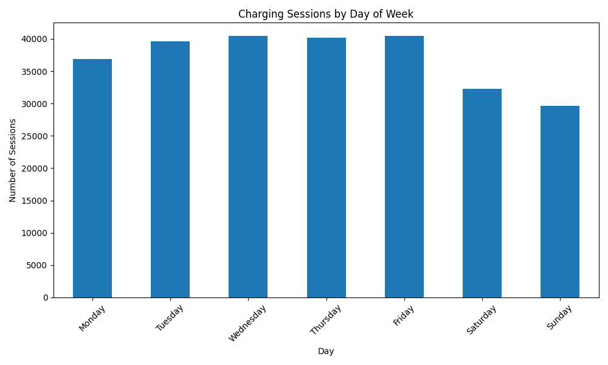
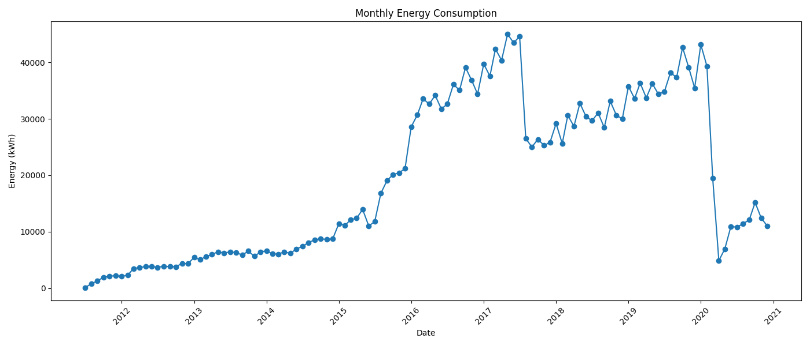
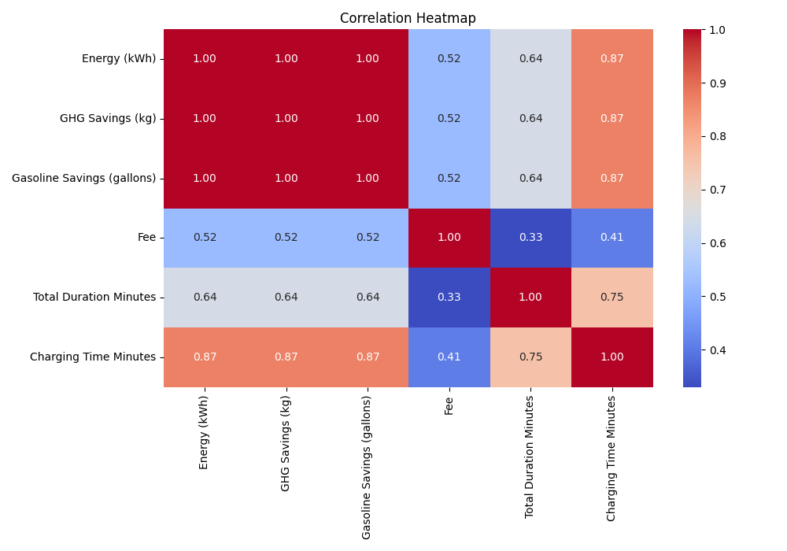
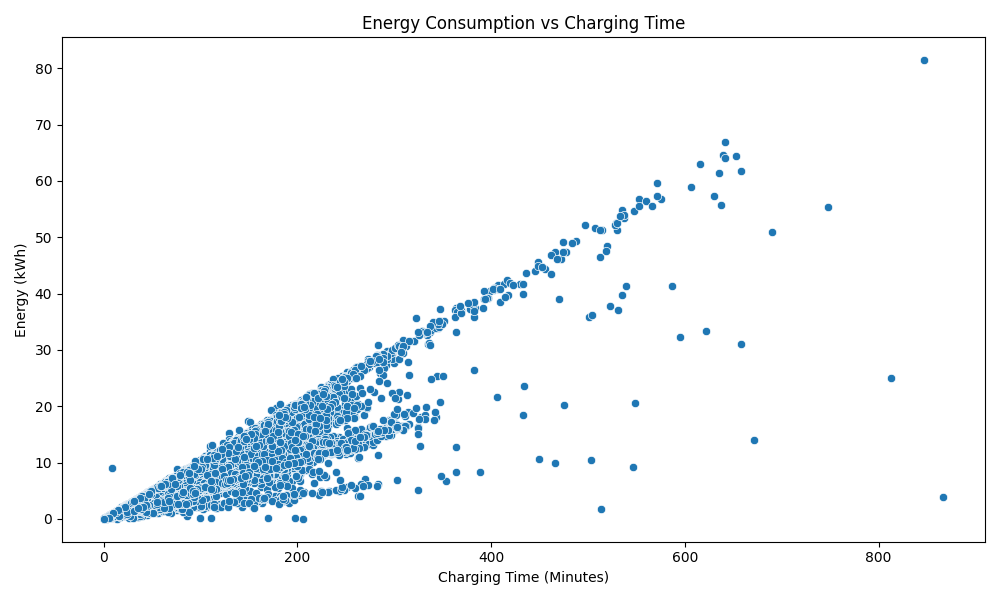

Charging sessions
259,411analysis-ready recordsDATA STORY · 2018–2020
Powering insights from 259K+
charging sessions.
Explore the full EV charging workflow—from preparing raw records to evaluating predictive models.
⚡ENERGY
ANALYTICS
ANALYTICS
Energy delivered
2.22M kWhacross all sessionsModel accuracy
78.3%best model R² scoreAnalysis assets
10EDA charts generatedPROJECT MAP
Follow the analysis
Choose a stage to view details and outputs.
STAGE 01 · DATA PREPARATION
Clean data. Reliable decisions.
The raw charging-session data was transformed into a consistent, model-ready dataset while preserving valid observations.
99.99%records retained
Raw records
259,415input CSV rowsDuplicates removed
4exact duplicate rowsPrepared features
+5time & duration variablesTRANSFORMATION LOG
Cleaning workflow
- 01Normalize structure
Trimmed column names and replaced blank strings with missing values.
- 02Remove duplicate records
Detected and removed 4 duplicate charging-session rows.
- 03Correct data types
Parsed dates, durations, numeric measures and categorical labels.
- 04Resolve missing & invalid values
Filled transaction dates from end dates; assigned Unknown to categories; removed negative values.
- 05Engineer analysis features
Created duration in minutes, year, month, day, hour and day-of-week fields.
OUTPUT
EVChargingStationUsage_cleaned.csv
The cleaned file is used as the single source for EDA and model training.
Rows259,411
Columns40
Duplicate rows0
Quality checks passed
STAGE 02 · EXPLORATORY DATA ANALYSIS
See how charging actually happens.
Usage, energy and station patterns from the cleaned EV charging dataset.
Session activity is distributed by hour and day.
Total charging energy analyzed.
Charging time is a strong predictor of kWh.










STAGE 05 · TREE-BASED REGRESSION
Four ways to model energy demand.
Every model uses the same cleaned data, features and 80/20 train-test split so the comparison is fair.
TARGET
Energy (kWh)
Energy (kWh)
TEST-SET COMPARISON
Performance by model
| Model | MAE ↓ | RMSE ↓ | R² ↑ | What it learns |
|---|
MODEL CONCEPTS
How the algorithms differ
01
Decision TreeOne sequence of if/else splits. Easy to inspect, but deep trees can overfit.
02
Random ForestMany trees trained on random samples, averaged to reduce variance.
03
AdaBoostSmall trees are trained sequentially, focusing on earlier mistakes.
04
XGBoostRegularized gradient boosting designed for accurate, efficient tree ensembles.
SAMPLE PREDICTIONS
Random Forest Regression
| Actual kWh | Predicted kWh | Error |
|---|
STAGE 03 · PREDICTIVE MODEL
Estimate energy with confidence.
A linear regression model predicts Energy (kWh) from session duration, hour, port type and plug type.
BEST MODEL
Linear Regression
Linear Regression
Mean absolute error
2.515 kWhlower is betterRoot mean squared error
3.380 kWhpenalizes larger errorsR² score
0.78378.3% variance explainedMODEL DESIGN
Feature pipeline
01Input features
→Charging time · hour · port type · plug type
02Preparation
→Median/mode imputation · one-hot encoding
03Prediction
Non-negative Energy (kWh) estimate
Training set 207,528 rowsTest set 51,883 rows
SAMPLE PREDICTIONS
Actual vs predicted
| Actual | Predicted | Difference |
|---|---|---|
| 37.182 | 28.183 | −8.999 |
| 5.389 | 6.158 | +0.769 |
| 9.093 | 12.042 | +2.949 |
| 18.121 | 18.394 | +0.273 |
LOGISTIC REGRESSION · STATION DEMAND
Predict if a station is busy.
Binary classification using station, time and connector details.
A station-hour is labelled busy when two or more charging sessions begin at the same station during that clock hour. The model uses balanced classes to better identify busy periods.
ROC-AUC score
0.668ability to separate busy and not busyBusy-station recall
78.8%busy periods correctly foundF1 score
0.391balance of busy precision and recallCLASSIFICATION PIPELINE
Busy / not-busy prediction
01Input features
→Station · hour · month · weekday · port · plug type
02Preparation
→Median/mode imputation · scaling · one-hot encoding
03Classification
Probability of a busy station-hour
Training set 207,516 rowsTest set 51,895 rows
LOGISTIC REGRESSION
Test-set outcomes
| Outcome | Sessions | Result |
|---|---|---|
| Busy → busy | 7,562 | Correct |
| Busy → not busy | 2,034 | Missed |
| Not busy → busy | 21,510 | Alert |
| Not busy → not busy | 20,789 | Correct |
Test groups are split by station-hour, keeping each station-hour entirely in either training or testing data.
STAGE 04 · FROM-SCRATCH OPTIMIZATION
Watch the model learn.
Batch gradient descent learns linear weights for energy prediction by repeatedly reducing squared error.
2,000
iterations
iterations
Mean absolute error
2.599 kWhtest-set evaluationRoot mean squared error
3.608 kWhtest-set evaluationR² score
0.75375.3% variance explainedLIVE DEMO
Energy estimator
Adjust session inputs to estimate energy using the trained gradient-descent model.
Estimated energy15.4 kWhbased on standardized model inputs
LEARNED PARAMETERS
Model coefficients
Charging Time Minutes
6.286
Hour
0.337
Intercept
8.536
η
Learning rate: 0.05
Features standardized using training data statistics before optimization.